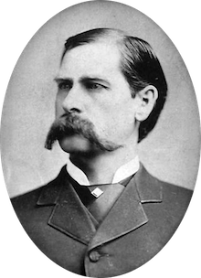

About Us
Bacon ipsum dolor amet meatball porchetta tongue, venison cow alcatra brisket landjaeger beef ribs doner shoulder capicola bacon ham hock pork chop. Prosciutto short ribs brisket capicola tri-tip. Corned beef shoulder tenderloin, pork loin tongue sirloin chuck capicola.
Bacon ipsum dolor amet meatball porchetta tongue, venison cow alcatra brisket landjaeger beef ribs doner shoulder capicola bacon ham hock pork chop. Prosciutto short ribs brisket capicola tri-tip. Corned beef shoulder tenderloin, pork loin tongue sirloin chuck capicola.
Bacon ipsum dolor amet meatball porchetta tongue, venison cow alcatra brisket landjaeger beef ribs doner shoulder capicola bacon ham hock pork chop. Prosciutto short ribs brisket capicola tri-tip. Corned beef shoulder tenderloin, pork loin tongue sirloin chuck capicola.Prosciutto short ribs brisket capicola tri-tip. Corned beef shoulder tenderloin, pork loin tongue sirloin chuck capicola. Bacon ipsum dolor amet meatball porchetta tongue, venison cow alcatra brisket landjaeger beef ribs doner shoulder capicola bacon ham hock pork chop. Prosciutto short ribs brisket capicola tri-tip.
Contact Us
Bacon ipsum dolor amet meatball porchetta tongue, venison cow alcatra brisket landjaeger beef ribs doner shoulder capicola bacon ham hock pork chop.
Employment
Bacon ipsum dolor amet meatball porchetta tongue, venison cow alcatra brisket landjaeger beef ribs doner shoulder capicola bacon ham hock pork chop.
Events
Bacon ipsum dolor amet meatball porchetta tongue, venison cow alcatra brisket landjaeger beef ribs doner shoulder capicola bacon ham hock pork chop.
Social Media
Bacon ipsum dolor amet meatball porchetta tongue, venison cow alcatra brisket landjaeger beef ribs doner shoulder capicola bacon ham hock pork chop.